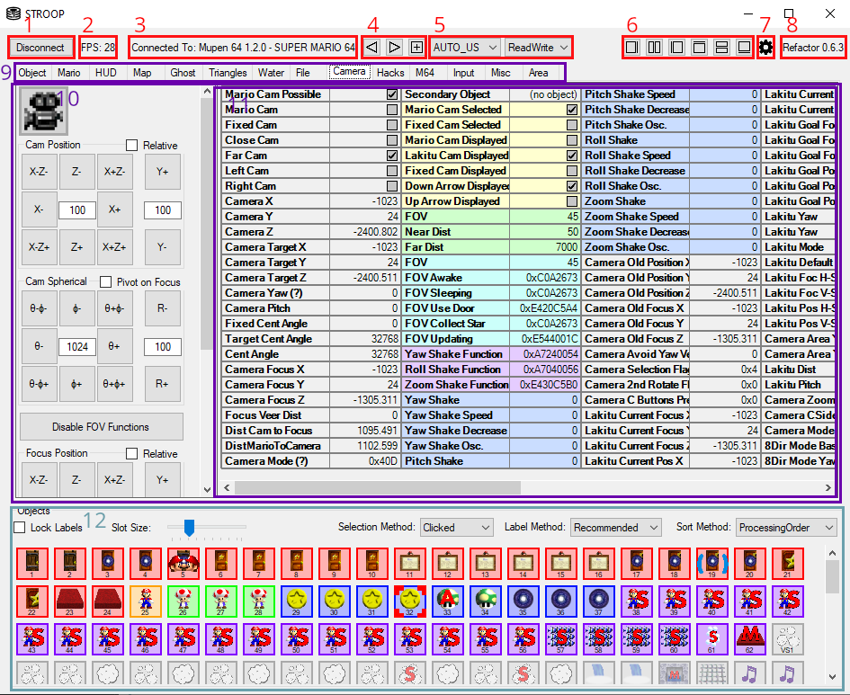

Main User Interface
After connecting STROOP to mupen, you will be greeted by the main user interface of STROOP.
The main user interface is subdivided into three main sections:
- General controls:
- 1: The
Disconnectbutton lets you return to the process selection interface. - 2: The FPS counter displays the number of (memory) updates STROOP is currently performing each seconds.
- 3: The
Connected To:label shows which process STROOP is currently connected to. - 4: The tab controls allow managing the layout of tabs. See Understanding Tabs in STROOP for more information.
- 5: These drop-down boxes are for choosing how to deal with the game's memory. See Memory Mapping for more information.
- 6: These buttons allow hiding or expanding certain window regions of the main UI.
- 7: The cog icon provides quick access to most options. Some more specific options must be accessed via the Options Tab, however.
- 8: The version of STROOP - you'd think there's nothing more to see here, but right clicking this actually reveals a number of miscellaneous tools, some of which are suprisingly useful.
- 1: The
- Tabs:
- 9: The list of tabs provides access to all the different functions STROOP has. By default, not all available tabs are shown here. See Understanding Tabs in STROOP for more information.
- 10: A "left panel" of a tab typically displays controls specific to the topic that tab is about.
- 11: A "Variable Panel" displays in-game memory values, derived values, as well as some special variables, and allows editing them in a neat table format. Nearly all tabs have one of these, and they are a central component of STROOP's user interface.
- Objects List: This large control group at the bottom allows viewing loaded objects at a glance, as well as performing complex operations on them, sometimes related to the currently selected tab. For more information, see the Object List chapter and consult the respective Tab documentation for how this interacts with each tab.

The Object List
-- TODO --
Memory mapping
-- TODO --